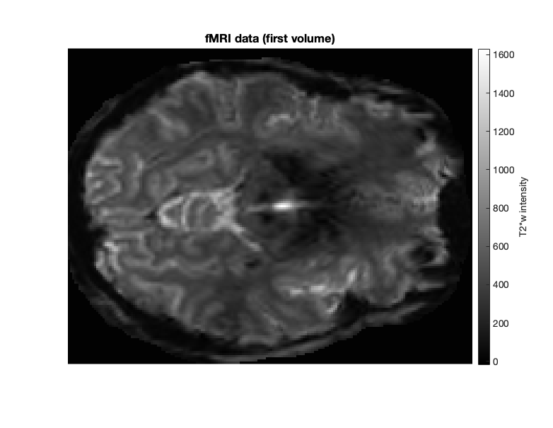

Contents
- Add dependencies and download the data.
- Data overview.
- Call GLMestimatesingletrial with default parameters.
- Important outputs.
- Plot a slice of brain with GLMsingle outputs.
- Run a standard GLM.
- Compare GLMs.
- Calculate voxel split-half reliability.
- Plot split-half reliability.
- Compare visual voxel reliabilities between beta versions.
Add dependencies and download the data.
% Add path to GLMsingle addpath('./../') addpath(genpath('./../utilities')) % You also need fracridge repository to run this code % https://github.com/nrdg/fracridge.git % addpath('fracridge') clear clc close all outputdir = 'example1outputs'; % Download files to data directory if ~exist('./data','dir') mkdir('data') end if ~exist('./data/nsdcoreexampledataset.mat','file') % download data with curl system('curl -L --output ./data/nsdcoreexampledataset.mat https://osf.io/k89b2/download') end load('./data/nsdcoreexampledataset.mat') % Data comes from subject1, NSD01 session from NSD dataset. % https://www.biorxiv.org/content/10.1101/2021.02.22.432340v1.full.pdf
Data overview.
clc whos % data -> consists of several runs of 4D volume files (x,y,z,t) where % (t)ime is the 4th dimention. In this example data consists of only a % single slice and has been prepared with a TR = 1s % ROI -> manually defined region in the occipital cortex. It is a binary % matrix where (x,y,z) = 1 corresponds to the cortical area that responded % to visual stimuli used in the NSD project. fprintf('There are %d runs in total.\n',length(design)); fprintf('The dimensions of the data for the first run are %s.\n',mat2str(size(data{1}))); fprintf('The stimulus duration is %.6f seconds.\n',stimdur); fprintf('The sampling rate (TR) is %.6f seconds.\n',tr);
Name Size Bytes Class Attributes ROI 145x186 215760 double data 1x12 388369344 cell design 1x12 69408 cell outputdir 1x15 30 char stimdur 1x1 8 double tr 1x1 8 double There are 12 runs in total. The dimensions of the data for the first run are [145 186 1 300]. The stimulus duration is 3.000000 seconds. The sampling rate (TR) is 1.000000 seconds.
figure(1);clf %Show example design matrix. for d = 1 imagesc(design{d}); colormap gray; drawnow xlabel('Conditions') ylabel('TRs') title(sprintf('Design matrix for run%i',d)) axis image end xticks(0:53:length(design{d})) set(gcf,'Position',[418 412 782 605])

% design -> Each run has a corresponding design matrix where each column % describes a single condition (conditions are repeated across runs). Each % design matrix is binary with 1 specfing the time (TR) when the stimulus % is presented on the screen. % In this NSD scan session there were 583 distinct images shown and hence % there are 583 predictor columns/conditions. Notice that white rectangles % are pseudo randomized and they indicate when the presentaion of each % image occurs. Note that in some runs not all images are shown, if a % column does not have a white rectangle it means that this image is % shown in a different run.
% Show an example slice of the first fMRI volume. figure(2);clf imagesc(data{1}(:,:,:,1)); colormap(gray); axis equal tight; c=colorbar; title('fMRI data (first volume)'); set(gcf,'Position',[418 412 782 605]) axis off c.Label.String = 'T2*w intensity'; set(gca,'FontSize',15)
Call GLMestimatesingletrial with default parameters.
% Outputs and figures will be stored in a folder (you can specify it's name % as the 5th output to GLMestimatesingletrial. Model estimates can be also % saved to the results variable which is the only output of % GLMestimatesingletrial % Optional parameters below can be assigned to a strucutre i.e % opt = struct('wantlibrary',1,'wantglmdenoise',1); Options are the 6th % input to GLMestimatesingletrial. % DEFAULT OPTIONS: % wantlibrary = 1 -> Fit HRF to each voxel % wantglmdenoise = 1 -> Use GLMdenoise % wantfracridge = 1 -> Use ridge regression to improve beta estimates % chunknum = 50000 -> is the number of voxels that we will process at the % same time. For setups with lower memory deacrease this number. % % wantmemoryoutputs is a logical vector [A B C D] indicating which of the % four model types to return in the output <results>. The user must be % careful with this, as large datasets can require a lot of RAM. If you % do not request the various model types, they will be cleared from % memory (but still potentially saved to disk). % Default: [0 0 0 1] which means return only the final type-D model. % wantfileoutputs is a logical vector [A B C D] indicating which of the % four model types to save to disk (assuming that they are computed). % A = 0/1 for saving the results of the ONOFF model % B = 0/1 for saving the results of the FITHRF model % C = 0/1 for saving the results of the FITHRF_GLMdenoise model % D = 0/1 for saving the results of the FITHRF_GLMdenoise_RR model % Default: [1 1 1 1] which means save all computed results to disk. % numpcstotry (optional) is a non-negative integer indicating the maximum % number of PCs to enter into the model. Default: 10. % fracs (optional) is a vector of fractions that are greater than 0 % and less than or equal to 1. We automatically sort in descending % order and ensure the fractions are unique. These fractions indicate % the regularization levels to evaluate using fractional ridge % regression (fracridge) and cross-validation. Default: % fliplr(.05:.05:1). A special case is when <fracs> is specified as a % single scalar value. In this case, cross-validation is NOT performed % for the type-D model, and we instead blindly use the supplied % fractional value for the type-D model. % For the purpose of this example we will keep all outputs in the memory. opt = struct('wantmemoryoutputs',[1 1 1 1]); if ~exist([outputdir '/GLMsingle'],'dir') [results] = GLMestimatesingletrial(design,data,stimdur,tr,[outputdir '/GLMsingle'],opt); % We assign outputs of GLMestimatesingletrial to "models" structure. Note % that results{1} contains GLM estimates from an ONOFF model, where % all images are treated as the same condition. These estimates could be % potentially used to find cortical areas that respond to visual % stimuli. We want to compare beta weights between conditions therefore we % are not going to store the ONOFF GLM results. models.FIT_HRF = results{2}; models.FIT_HRF_GLMdenoise = results{3}; models.FIT_HRF_GLMdenoise_RR = results{4}; else results = load([outputdir '/GLMsingle/TYPEB_FITHRF.mat']); models.FIT_HRF = results; results = load([outputdir '/GLMsingle/TYPEC_FITHRF_GLMDENOISE.mat']); models.FIT_HRF_GLMdenoise = results; results = load([outputdir '/GLMsingle/TYPED_FITHRF_GLMDENOISE_RR.mat']); models.FIT_HRF_GLMdenoise_RR = results; end
Important outputs.
% R2 -> is model accuracy expressed in terms of R^2 (percentage). % modelmd -> is the full set of single-trial beta weights (X x Y x Z x % TRIALS). Beta weights are arranged in a chronological order) % HRFindex -> is the 1-index of the best fit HRF. HRFs can be recovered % with getcanonicalHRFlibrary(stimdur,tr) % FRACvalue -> is the fractional ridge regression regularization level % chosen for each voxel. Values closer to 1 mean less regularization.
Plot a slice of brain with GLMsingle outputs.
% We are going to plot several outputs from FIT_HRF_GLMdenoise_RR GLM. slice = 1; val2plot = {'modelmd';'R2';'HRFindex';'FRACvalue'}; cmaps = {cmapsign2;hot;jet;copper}; figure(3);clf for v = 1 : length(val2plot) f=subplot(2,2,v); if contains('modelmd',val2plot{v}) imagesc(nanmean(models.FIT_HRF_GLMdenoise_RR.(val2plot{v})(:,:,slice),4),[-5 5]); axis off image; title('BETA WEIGHT (averaged across conditions)') else imagesc(models.FIT_HRF_GLMdenoise_RR.(val2plot{v})(:,:,slice)); axis off image; title(val2plot{v}) end colormap(f,cmaps{v}) colorbar set(gca,'FontSize',15) end set(gcf,'Position',[418 412 782 605])
Run a standard GLM.
% Additionally, for comparison purposes we are going to run a standard GLM % without HRF fitting, GLMdenoise or ridge regression regularization. We % will change the default settings by using the "opt" structure. opt.wantlibrary = 0; % switch off HRF fitting opt.wantglmdenoise = 0; % switch off GLMdenoise opt.wantfracridge = 0; % switch off ridge regression opt.wantfileoutputs = [0 1 0 0]; opt.wantmemoryoutputs = [0 1 0 0]; % By changing the 5th argument to NaN we are not creating an output folder % with the results and figures. if ~exist([outputdir '/GLMbaseline'],'dir') [ASSUME_HRF] = GLMestimatesingletrial(design,data,stimdur,tr,[outputdir '/GLMbaseline'],opt); models.ASSUME_HRF = ASSUME_HRF{2}; else results = load([outputdir '/GLMbaseline/TYPEB_FITHRF.mat']); models.ASSUME_HRF = results; end % We assign outputs from GLMestimatesingletrial to "models" structure. % Again, results{1} contains GLM estimates from an ONOFF model so we are % not going to extract it.
% Now, "models" variable holds solutions for 4 GLM models
disp(fieldnames(models))
'FIT_HRF'
'FIT_HRF_GLMdenoise'
'FIT_HRF_GLMdenoise_RR'
'ASSUME_HRF'
Compare GLMs.
% To compare the results of different GLMs we are going to calculate the % voxel-wise split-half reliablity for each model. Reliablity index % represents a correlation between beta weights for repeated presentations % of the same stimuli. In short, we are going to check how % reliable/reproducible are single trial responses to repeated images % estimated with each GLM type. % This NSD scan session has a large number of images that are just shown % once during the session, some images that are shown twice, and a few that % are shown three times. In the code below, we are attempting to locate the % indices in the beta weight GLMsingle outputs modelmd(x,y,z,trials) that % correspond to repated images. Here we only consider stimuli that have % been repeated once. For the purpose of the example we ignore the 3rd % repetition of the stimulus. % consolidate design matrices designALL = cat(1,design{:}); % compute a vector containing 1-indexed condition numbers in chronological % order. corder = []; for p=1:size(designALL,1) if any(designALL(p,:)) corder = [corder find(designALL(p,:))]; end end
% let's take a look at the first few entries corder(1:3) % Note that [375 497 8] means that the first stimulus trial involved % presentation of the 375th condition, the second stimulus trial involved % presentation of the 497th condition, and so on.
ans = 375 497 8
% In order to compute split-half reliability, we have to do some indexing. % we want to find images with least two repetitions and then prepare a useful % matrix of indices that refer to when these occur. repindices = []; % 2 x images containing stimulus trial indices. % the first row refers to the first presentation; % the second row refers to the second presentation. for p=1:size(designALL,2) % loop over every condition temp = find(corder==p); if length(temp) >= 2 repindices = cat(2,repindices,[temp(1); temp(2)]); % note that for images with 3 presentations, we are simply ignoring the third trial end end % let's take a look at a few entries repindices(:,1:3) % Notice that the first condition is presented on the 217th stimulus trial % and the 486th stimulus trial, the second condition is presented on the % 218th and 621st stimulus trials, and so on. fprintf('There are %i repeated images in the experiment \n',length(repindices)) % Now, for each voxel we are going to correlate beta weights describing the % response to images presented for the first time with beta weights % describing the response from the repetition of the same % image. With 136 repeated images R value for each voxel will correspond % to correlation between two vectors with 136 beta weights each.
ans = 217 218 19 486 621 124 There are 136 repeated images in the experiment
Calculate voxel split-half reliability.
model_names = fieldnames(models); model_names = model_names([4 1 2 3]); % We arrange models from least to most sophisticated (for visualization % purposes) vox_reliabilities = cell(1,length(models)); % Finally, let's compute some split-half reliability. We are going to loop % through our 4 models and calculate split-half reliability for each of % them for m = 1 : length(model_names) betas = models.(model_names{m}).modelmd(:,:,:,repindices); % use indexing to pull out the trials we want betas_reshaped = reshape(betas,size(betas,1),size(betas,2),size(betas,3),2,[]); % reshape to X x Y x Z x 2 x CONDITIONS vox_reliabilities{m} = calccorrelation(betas_reshaped(:,:,:,1,:),betas_reshaped(:,:,:,2,:),5); end
Plot split-half reliability.
% For each model we plot the results of reliablity as an overlay. figure(4);clf for m = 1 : length(model_names) vox_reliability = vox_reliabilities{m}; underlay = data{1}(:,:,:,1); ROI(ROI~=1) = NaN; overlay = vox_reliability; underlay_im = cmaplookup(underlay,min(underlay(:)),max(underlay(:)),[],gray(256)); overlay_im = cmaplookup(overlay,-0.5,0.5,[],hot(256)); mask = ROI==1; subplot(2,2,m); hold on imagesc(underlay_im); imagesc(overlay_im, 'AlphaData', mask); hold off colormap hot axis image off c = colorbar; c.Label.String = 'Split-half reliability (r)'; c.Ticks = [0 0.5 1]; c.TickLabels = {'-0.5';'0';'0.5'}; set(gca,'FontSize',15) title(model_names{m},'Interpreter','None') end set(gcf,'Position',[418 412 782 605])
Compare visual voxel reliabilities between beta versions.
figure(5);clf
subplot(1,2,1);
cmap = [0.2314 0.6039 0.6980
0.8615 0.7890 0.2457
0.8824 0.6863 0
0.9490 0.1020 0];
% For each GLM type we calculate median reliability for voxels within the
% visual ROI and plot it as a bar plot.
for m = 1 : 4
bar(m,nanmedian(vox_reliabilities{m}(ROI==1)),'FaceColor','None','Linewidth',3,'EdgeColor',cmap(m,:)); hold on
end
ylabel('Median reliability')
legend(model_names,'Interpreter','None','Location','NorthWest')
set(gca,'Fontsize',16)
set(gca,'TickLabelInterpreter','none')
xtickangle(0)
xticks([])
ylim([0.1 0.2])
set(gcf,'Position',[418 412 782 605])
title('Median voxel split-half reliability of GLM models')
subplot(1,2,1);
vox_reliability = vox_reliabilities{4} - vox_reliabilities{1};
underlay = data{1}(:,:,:,1);
ROI(ROI~=1) = NaN;
overlay = vox_reliability;
underlay_im = cmaplookup(underlay,min(underlay(:)),max(underlay(:)),[],gray(256));
overlay_im = cmaplookup(overlay,-0.3,0.3,[],cmapsign2);
mask = ROI==1;
subplot(1,2,2);
hold on
imagesc(underlay_im);
imagesc(overlay_im, 'AlphaData', mask);
hold off
axis image
colormap(cmapsign2)
c = colorbar;
c.Ticks = [0 0.5 1];
c.TickLabels = {'-0.3';'0';'0.3'};
title('change in nsdgeneral voxel reliability due to GLMsingle (r)')
xlabel('plotting (FITHRF_GLMDENOISE_RR - ASSUMEHRF) reliabilities','Interpreter','none');
xticks([])
yticks([])
set(gca,'Fontsize',16)
set(gcf,'Position',[36 343 1116 674])